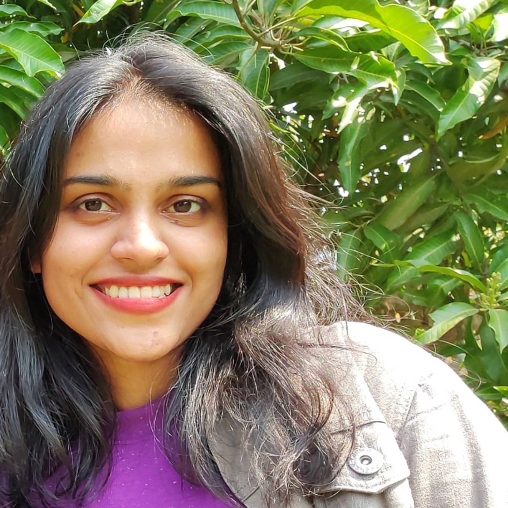

Mansi Belnekar

Web Developer
Profile
Designing transcendental experience and finding the best solutions is my Aim. I'm passionate about
Technology and always curious about different Software. My specialization is creating Visual aesthetics.
Work Experience
Accenture (Roche)
Media & Graphic Designer (May 2022 - Present)
- Worked on projects requiring Video Editing,
Motion graphics and 3D pack shot skills
- Creating Digital assets as Interactive PDF to
Animated banners
- Editing Video content for medical use on
600+projects
- Conduct Software Training sessions for
Internal team.
NITCO Ltd.
Business Development - Executive (Mar 2021 - Dec 2021)
- Design & Suggest surface concepts for
Architects and Clients through CAD plans.
- Creating Project proposals & corporate
presentations for 200+ projects.
- Communication with PAN India Team as
business development coordinator.
- Conduct Skill-building Training sessions for
Internal team.
Hiten Sethi Architects
Architect Intern (Dec 2018 - Apr 2019)
- Assistant Architect for Science Centre Park,
NMMC proposed project, Nerul
- Working Drawing from Residential to
Institutional Projects.
- Site Visit & Supervision for 2 projects
Skills
- Website Development
- Video Editing
- Adobe Creative Suite
- Software enthusiast